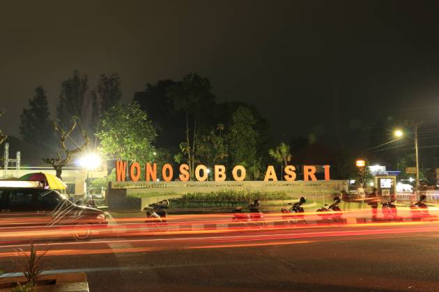

Apa itu wonosobo? pasti kalian tidak asing dengan nama kota ini.
Wonosobo adalah kota yang sangat terkenal dengan ke indahan alam dan kulinernya.Kota ini banyak tempat menarik yang bisa di kunjungi.
Wonosobo memiliki sejarah dan budaya yang kaya.Dikelilingi oleh pegunungan,kota ini menawarkan pemandangan yang menakjubkan dan udara yang sejuk